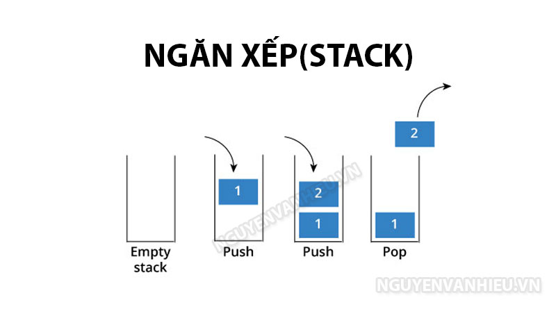

Thuật ngữ 'ngăn xếp' đã được sử dụng trong ngành công nghệ trong nhiều thập kỷ. Từng được sử dụng chủ yếu trong lập trình và phần cứng máy tính, ngăn xếp đã trở nên phổ biến hơn rất nhiều trong việc sử dụng hàng ngày để tiếp thị và nó hoạt động trên cơ sở các công cụ được xây dựng cùng nhau và chạy cùng nhau trong một quy trình 'giống như ngăn xếp'. Các ứng dụng và phần mềm sẽ chạy trên hoặc trên các phần tử khác trong ngăn xếp và nhiều phần tử sẽ phụ thuộc lẫn nhau.
Ngăn xếp MarTech của doanh nghiệp bạn sẽ tập hợp mọi thứ bạn cần để thành công trong hoạt động tiếp thị với công nghệ phù hợp tại chỗ. Các loại ngăn xếp phổ biến mà hầu hết các doanh nghiệp sử dụng được xây dựng bằng sự kết hợp của các công nghệ và phần mềm khác nhau, mặc dù một số người chọn cách phân biệt giữa phần mềm và công nghệ theo những cách sau:
Phần mềm ngăn xếp là các gói phần mềm cần thiết cho phần phụ trợ của một trang web hoạt động thành công. Ngăn xếp phần mềm có thể vươn xa và mở rộng từ các yếu tố như hệ điều hành đến các ứng dụng cụ thể được chọn để hợp lý hóa các quy trình và nâng cao kết quả.
Các ngăn xếp công nghệ thường phức tạp hơn và dựa trên cơ sở hạ tầng nhiều hơn, được thiết kế để đảm bảo phần phụ trợ của bất kỳ hệ thống máy tính, máy chủ hoặc mạng nhất định nào. Công nghệ tiếp thị, hay MarTech, mang ý tưởng về ngăn xếp đến một loại công nghệ và đối tượng mới. Ngăn xếp MarTech của bạn được thiết kế để giúp các nỗ lực tiếp thị của bạn hiệu quả hơn, hiệu quả hơn và phù hợp với doanh nghiệp của bạn.
Tại một số doanh nghiệp MarTech được triển khai dưới dạng các tầng công nghệ khác nhau, trong đó các công cụ hoạt động song song, phối hợp cùng nhau thực hiện mục tiêu tiếp thị được đề ra một cách tự động. Dưới đây là một mô hình tầng công nghệ MarTech điển hình:
Theo thuật ngữ cơ bản nhất, MarTech Stack của bất kỳ doanh nghiệp nào là một tập hợp các công cụ được chọn để làm cho các hoạt động và quy trình tiếp thị trở nên hiệu quả và hiệu quả hơn. Các công cụ có thể kết hợp nền tảng SaaS, công cụ truyền thông xã hội, hệ thống quản lý nội dung, công cụ phân tích và nhiều loại khác, tùy thuộc vào doanh nghiệp được đề cập.
Tùy thuộc vào quy mô và nhu cầu của bất kỳ doanh nghiệp cá nhân nào, nền tảng tiếp thị sẽ thay đổi. Nhiều công cụ có thể cần thiết và có thể đưa vào các bộ phận khác nhau nếu cần thiết để đảm bảo hoạt động trơn tru, hiệu quả ở mọi cấp độ của bất kỳ chiến dịch hoặc hợp đồng nhất định nào.
Một chỉ báo tốt về mức độ quan trọng của công nghệ đối với hoạt động tiếp thị là dự báo của Gartner rằng trong 5 năm tới, các giám đốc tiếp thị sẽ chi tiêu nhiều hơn cho công nghệ so với các giám đốc thông tin. Chỉ một mình cho thấy công nghệ đã trở nên quan trọng như thế nào đối với tiếp thị và cách mỗi doanh nghiệp cần đánh giá nhu cầu của chính họ để tạo ra ngăn xếp tối ưu của họ. Đây là một lĩnh vực mà không có giải pháp phù hợp cho tất cả; các bộ phận tiếp thị cần phải xem xét các yêu cầu, khách hàng và chiến dịch cụ thể của riêng họ và xây dựng hệ thống của họ dựa trên điều này.
Lấy hội thảo trên web làm ví dụ. Hội thảo trên web ít nhất sẽ yêu cầu trang đích để mọi người đăng ký, nội dung ở dạng văn bản bán hàng và tiếp thị, chưa kể đến việc thiết lập và chính hội thảo trên web. Sau đó, nó sẽ cần được quảng bá qua email và tiếp thị truyền thông xã hội cũng như nhắm mục tiêu khách hàng và khách hàng tiềm năng thông qua nhóm bán hàng sử dụng giải pháp CRM. Một ví dụ này cho thấy mức độ đi vào từng yếu tố của chiến dịch tiếp thị và cách ngăn xếp MarTech được tích hợp như thế nào khi các bộ phận khác nhau phối hợp hoạt động - thậm chí quảng bá hội thảo trên web liên quan đến một số công nghệ và đây chỉ là một yếu tố của tiếp thị lớn hơn và / hoặc chiến dịch phát triển kinh doanh.
Như đã đề cập, mỗi ngăn xếp MarTech của doanh nghiệp là duy nhất và cụ thể nhưng có một số yếu tố chính mà hầu hết sẽ kết hợp cùng với các công cụ khác từ các phòng ban tích hợp. Dưới đây là một số loại công cụ và công nghệ chính mà bạn mong đợi trong một ngăn xếp MarTech điển hình.
Một nền tảng cần thiết để chạy trang web, blog của bạn hoặc sản phẩm dựa trên web khác để tiếp thị kinh doanh trực tuyến. CMS phổ biến vì chúng cho phép các nhóm và nhân viên phi kỹ thuật đăng nhập vào trang web và thực hiện các thay đổi khi cần thiết, tải lên nội dung, v.v.
Các công cụ quảng cáo thường kết hợp các tùy chọn quảng cáo trả tiền nhưng cũng có khả năng theo dõi và đo lường. Các công cụ như Google AdWords, Bing Ads và Facebook Power Editor là ví dụ về các công cụ quảng cáo phổ biến mà bạn có thể chọn để tích hợp vào công nghệ tiếp thị của mình.
Chuyển đổi lưu lượng truy cập thành khách hàng tiềm năng và khách hàng tiềm năng về cơ bản là điểm cốt lõi của bất kỳ chiến dịch tiếp thị nào. Các công cụ như Crazy Egg theo dõi hành vi trên trang web để bạn có thể chọn ra các khách hàng tiềm năng chuyển đổi và bỏ mua quá cũng rất phổ biến.
Tiếp thị qua email là xương sống của hầu hết tất cả các chiến dịch tiếp thị và các công nghệ phù hợp có thể giúp nó thành công hơn nữa, tăng tốc các giai đoạn thử nghiệm và theo dõi kết quả hiệu quả hơn. Một số tổ chức sẽ chọn một công cụ tiếp thị qua email đơn giản giúp thiết kế và có một số yếu tố phân tích trong khi những tổ chức khác yêu cầu thứ gì đó mạnh mẽ hơn nhiều như Infusionsoft.
Tất cả các doanh nghiệp sẽ thiết lập các kênh truyền thông xã hội đã chọn và có thể sử dụng các công cụ cụ thể, như Hootsuite và Buffer phổ biến, để tự động hóa chúng. Điều này cũng tạo thành một phần của ngăn xếp MarTech. Cho dù đó chỉ đơn giản là một nền tảng để lên lịch và tự động hóa, một nền tảng mối quan hệ để thúc đẩy tương tác hay một công cụ chuyên sâu để phân tích và đo lường hiệu suất kênh, đều có những công cụ hiệu quả cho tất cả các khía cạnh của mạng xã hội.
Dẫn đầu từ mạng xã hội là nhu cầu về các công cụ tập trung vào dịch vụ khách hàng. Trải nghiệm khách hàng nên là trọng tâm cốt lõi của bất kỳ chiến dịch tiếp thị nào và các kênh và phương pháp được sử dụng để hình thành trải nghiệm này sẽ bao gồm các phương pháp tiếp thị ở trên như phương tiện truyền thông xã hội, tiếp thị qua email và hơn thế nữa. Dịch vụ khách hàng đã trở nên tập trung rất nhiều vào phương tiện truyền thông xã hội vì khách hàng bình thường hiện mong đợi các thương hiệu sử dụng các kênh xã hội của họ theo cách đó cho dù họ là ngân hàng trên phố cao hay nhà bán lẻ ngách.
Doanh nghiệp càng tận dụng nhiều kênh tiếp thị thì việc theo dõi và quản lý dữ liệu càng trở nên quan trọng hơn. Hệ thống quản lý quan hệ khách hàng chất lượng tốt giúp ghi lại và theo dõi tất cả các mối quan hệ khách hàng của bạn trên các nền tảng khác nhau. Một hệ thống CRM tốt là điều cần thiết đối với ngăn xếp của bạn vì nó sẽ đảm bảo bạn có thể giám sát đầy đủ hoạt động trên các nền tảng và ứng dụng khác nhau.
Tự động hóa tiếp thị đã trở nên gần như đồng nghĩa với các chiến dịch và công ty thành công. Các yếu tố bán hàng và tiếp thị có thể hoàn toàn tự động, giúp loại bỏ nhân lực và thời gian lãng phí. Tự động hóa tiếp thị có nhiều quy mô - từ tiếp thị qua email đến các trang đích đáp ứng hoặc từ các công cụ kiểm tra A / B đến phần mềm báo cáo và phân tích.
Google Analytics và các công cụ tương tự khác là cốt lõi của ngăn xếp của bạn. Tích hợp để xem liệu hầu hết các công cụ khác của bạn có đang hoạt động hay không, các công cụ phân tích theo dõi và đo lường tất cả các hoạt động bán hàng và tiếp thị của bạn để bạn có thể xác định cái nào hiệu quả và cái nào không.
Sự cân bằng tốt là chìa khóa cho một ngăn xếp MarTech thành công và đây là điều bạn thường học được theo thời gian với việc thử và sai các công cụ khác nhau. Khi bạn bắt đầu tích hợp các công nghệ và phát triển nền tảng của mình, bạn sẽ thấy thời gian và sức lực của mình có thể được tập trung vào các yếu tố sáng tạo và đổi mới hơn của tiếp thị, với các công cụ hỗ trợ các lựa chọn và quyết định của bạn.
Nguồn: MartechAdvisor.com